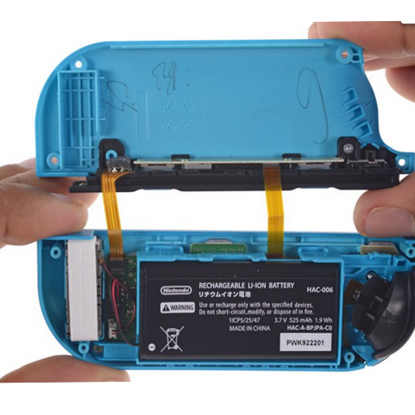
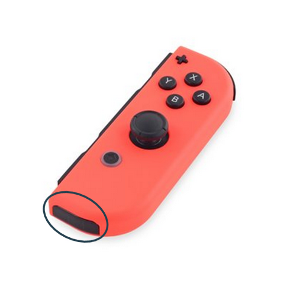
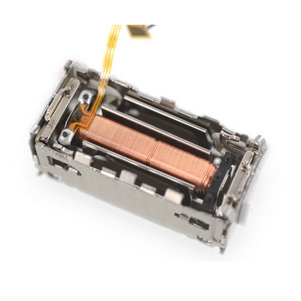
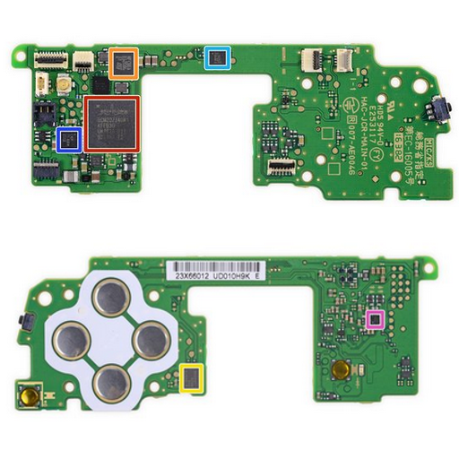

Der Akku
Die Joy-Cons besitzen einen 1,9 WH Lithium Akku welcher mit dem verbinden der Hauptkonsole aufgeladen werden kann.

Der rote Joycon besitz zusätzlich noch einen Infrarotsensor
Die Infrarot-Hardware besteht aus einer Infrarotkamera und vier Infrarot-LEDs. Diese können nahe Objekte erkennen.

Die Joy-Cons verfügen über einen HD-Vibrationsmotor, der in der Lage ist, lineare Bewegungen zu erzeugen.

Die Kontrollplatine
rot: Bluethooth 4.1 Modul
orange: NFC Contoller für Figuren
gelb: 4MB Flashspeicher
grün: 32-Bit Microcontoller
hellblau: 3-Achsen Beschleunigungs-/Drehsensor
dunkelblau: Akkulader
rosa: Class-D Audio Monoverstärker(wandelt ein analoges Signal in ein digitales)